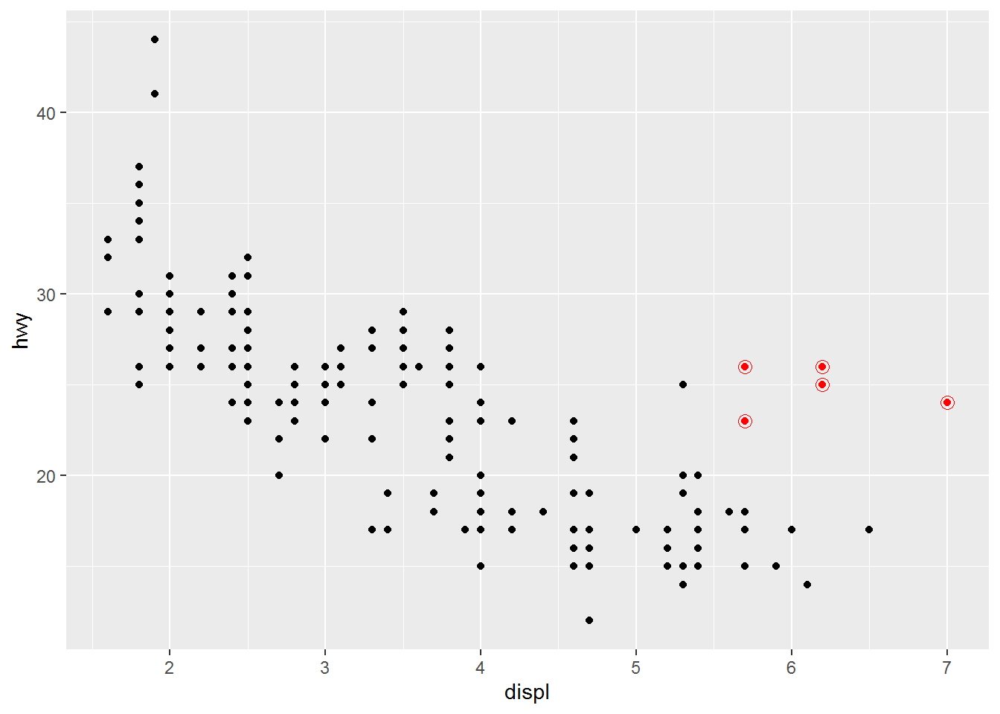
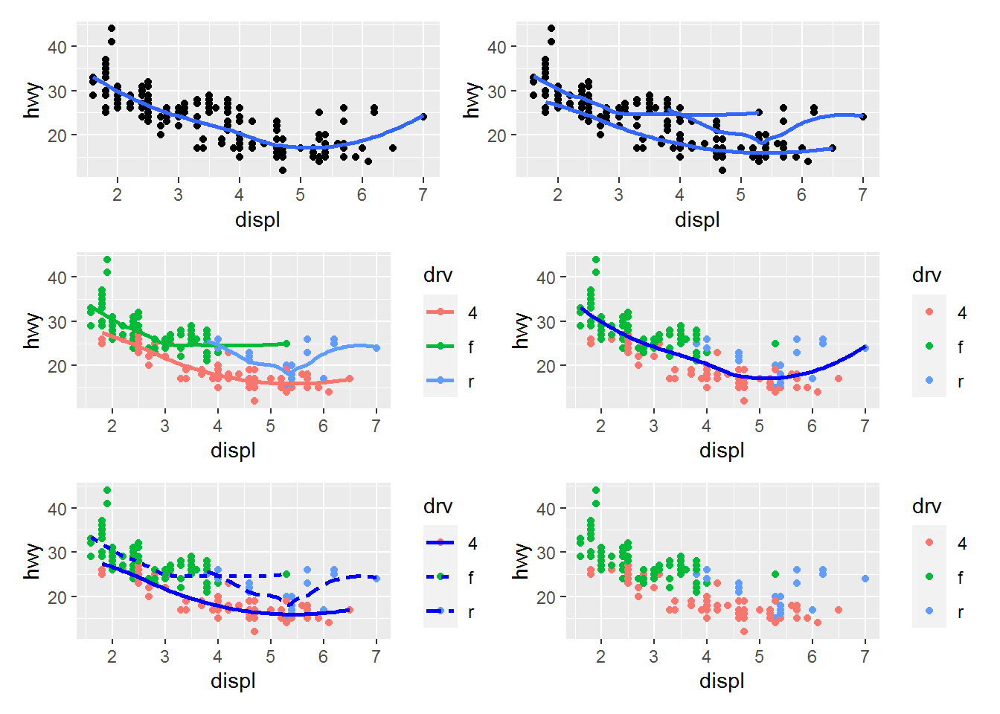

11 Layers
“You can learn more about all possible aesthetic mappings in the aesthetic specifications vignette at https://ggplot2.tidyverse.org/articles/ggplot2-specs.html.” [aesthetic specifications]
“Every geom function in ggplot2 takes a mapping argument, either defined locally in the geom layer or globally in the ggplot() layer.” [global or local mapping for geom]
“ggplot2 will draw a separate object for each unique value of the grouping variable. In practice, ggplot2 will automatically group the data for these geoms whenever you map an aesthetic to a discrete variable (as in the linetype example). It is convenient to rely on this feature because the group aesthetic by itself does not add a legend or distinguishing features to the geoms.” [separate geometric objects]
“If you place mappings in a geom function, ggplot2 will treat them as local mappings for the layer. It will use these mappings to extend or overwrite the global mappings for that layer only. This makes it possible to display different aesthetics in different layers.” [local mapping] “You can use the same idea to specify different data for each layer.” [local data]
“the ggridges package (https://wilkelab.org/ggridges) is useful for making ridgeline plots, which can be useful for visualizing the density of a numerical variable for different levels of a categorical variable.” [ggridges package]
“The best place to get a comprehensive overview of all of the geoms ggplot2 offers, as well as all functions in the package, is the reference page: https://ggplot2.tidyverse.org/reference.”
“The first argument of facet_grid() is also a formula, but now it’s a double sided formula: rows ~ cols.” [facet_grid()]
“By default each of the facets share the same scale and range for x and y axes.” “Setting the scales argument in a faceting function to”free” will allow for different axis scales across both rows and columns, “free_x” will allow for different scales across rows, and “free_y” will allow for different scales across columns.” [
facet_grid(drv ~ cyl, scales = "free_y")]“You can avoid this gridding by setting the position adjustment to “jitter”. position = “jitter” adds a small amount of random noise to each point.” [
geom_point(position = "jitter")] “Because this is such a useful operation, ggplot2 comes with a shorthand for geom_point(position =”jitter”): geom_jitter().” [geom_jitter()]coord_flip()
11.1 An Example
library(tidyverse)
ggplot(mpg, aes(x = displ, y = hwy)) +
geom_point() +
geom_point(
data = mpg %>% filter(class == "2seater"),
color = "red"
) +
geom_point(
data = mpg %>% filter(class == "2seater"),
shape = "circle open", size = 3, color = "red"
)
11.2 Exercise
library(tidyverse)
library(patchwork)
p1 <-
mpg %>%
ggplot(aes(x = displ, y = hwy)) +
geom_point() +
geom_smooth(se = FALSE)
p2 <-
mpg %>%
ggplot(aes(x = displ, y = hwy)) +
geom_point() +
geom_smooth(aes(group = drv), se = FALSE, show.legend = FALSE)
p3 <-
mpg %>%
ggplot(aes(x = displ, y = hwy, color = drv)) +
geom_point() +
geom_smooth(se = FALSE)
p4 <-
mpg %>%
ggplot(aes(x = displ, y = hwy, color = drv)) +
geom_point() +
geom_smooth(color = 'blue', se = FALSE)
p5 <-
mpg %>%
ggplot(aes(x = displ, y = hwy, color = drv)) +
geom_point() +
geom_smooth(aes(linetype = drv), color = 'blue', se = FALSE)
p6 <-
mpg %>%
ggplot(aes(x = displ, y = hwy, color = drv)) +
geom_point()
(p1 | p2) / (p3 | p4) / (p5 | p6)